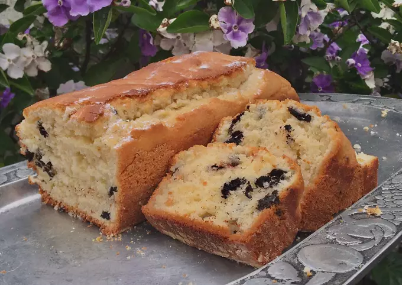

- Ingredientes:
- 12 raciones
- 2 huevos
- 3/4 taza azúcar
- 1/2 taza aceite
- 3/4 taza yogurt natural o de vainilla
- Chorro esencia de vainilla
- 2 tazas harina
- 1 cda polvo de hornear
- 1 paquete galletas mini oreo
- En un bowl, con un globo de cocina mezclar los huevos con el azúcar.
- Agregar los líquidos (aceite, yogurt, esencia de vainilla) y luego los secos (harina, polvo de hornear) y mezclar bien.
- En un bowl aparte poner las galletas partidas en pedacitos y mezclarlas con 2 cdas de harina (esto es para que cuando el budín se hornee no se bajen y no queden concentradas en la base del budín).
- Integrar las galletas a la mezcla con movimientos envolventes y pasar a la budinera previamente enmantecada y enharinada.
- Mandar el horno precalentado a 180 grados durante 45 minutos aprox., o hasta que puedan pinchar el budín con un cuchillo y no salga mezcla cruda.
- Disfrutar! Espero sus fotos de cuando lo hagan!